01
Winterization
Prepare your boat for winter with our expert Winterization service, ensuring protection against cold weather damage. Trust us to safeguard your vessel so it’s ready for smooth sailing come springtime.
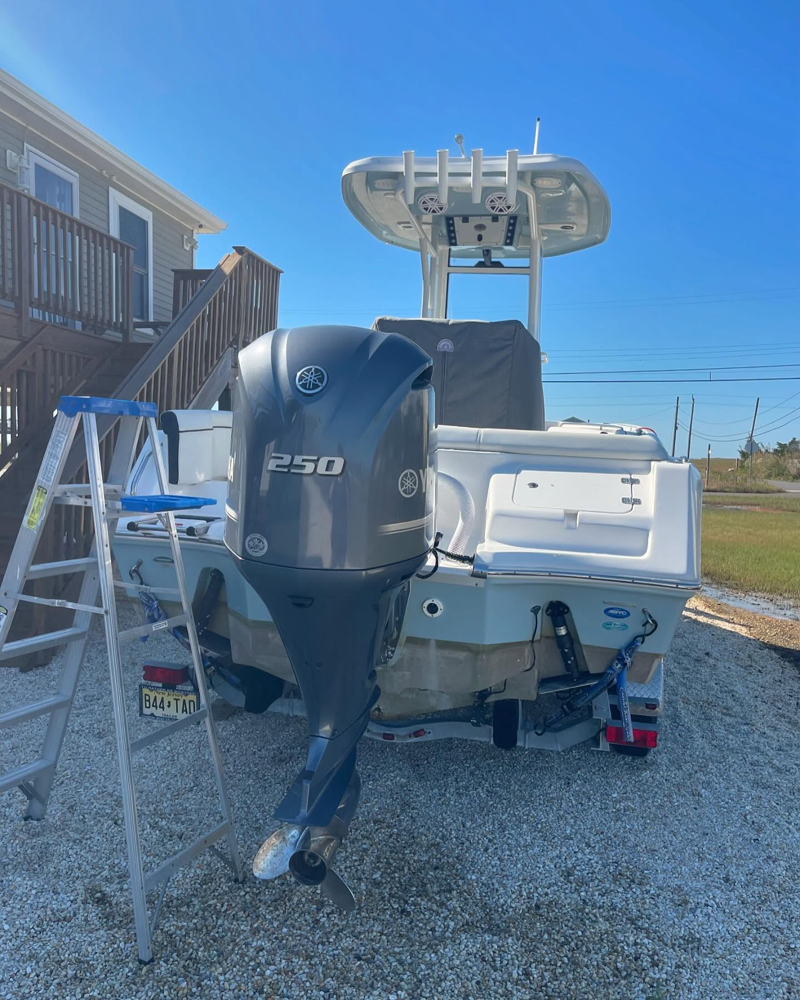
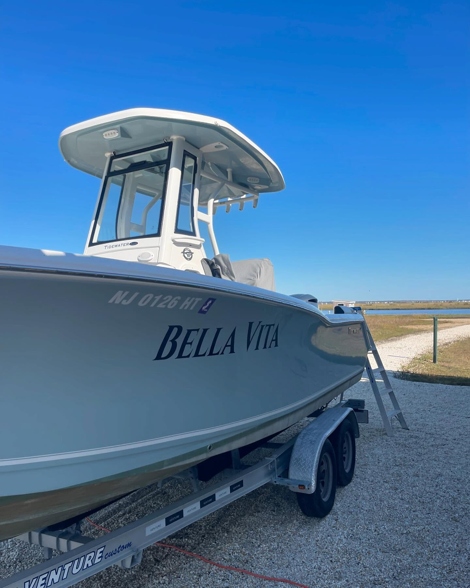
Stafford Township, New Jersey
C&T Marine LLC offers expert boat & marine repair across the Jersey Shore — keeping your vessel running smoothly so you can enjoy the water worry-free.
About C&T Marine
At C and T Marine LLC, located in Stafford Township, NJ, we are experts in boat and marine repair services for the surrounding areas. Our team — Cullen & Teg — takes pride in delivering top-notch craftsmanship and excellent customer service. Trust us to keep your vessel running smoothly so you can enjoy the water worry-free.
Our Services
Prepare your boat for winter with our expert Winterization service, ensuring protection against cold weather damage. Trust us to safeguard your vessel so it’s ready for smooth sailing come springtime.

Our Outboard Service provides convenient, professional boat and marine repairs right at your location, ensuring minimal downtime and maximum convenience for homeowners seeking efficient and reliable maintenance solutions.
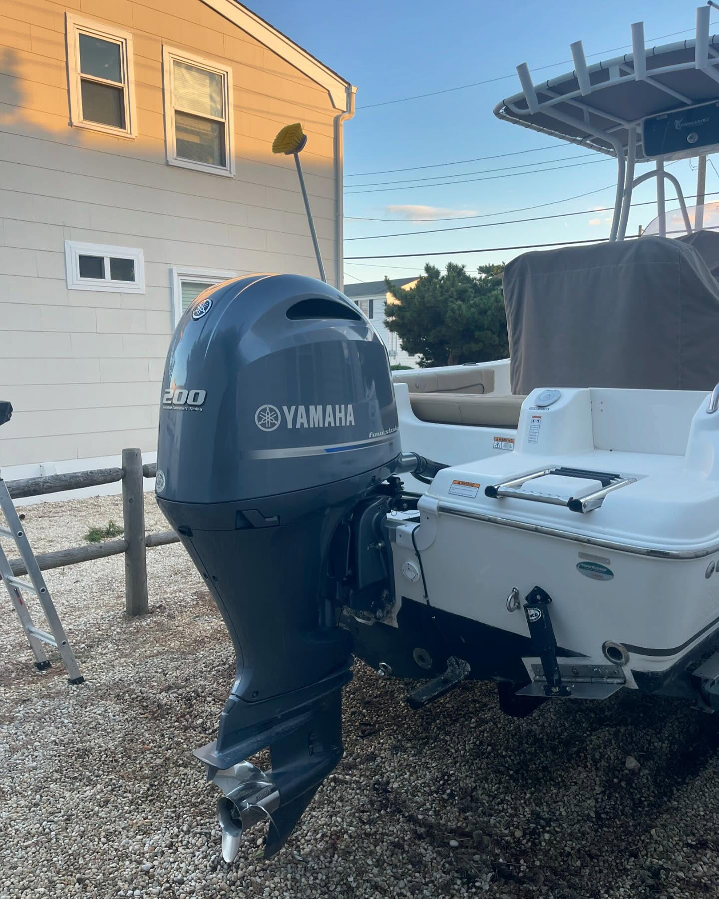
Enhance your boating experience with our expert electronics installation service, ensuring seamless integration of cutting-edge technology for navigation, communication, and entertainment systems tailored precisely to your vessel’s unique needs.
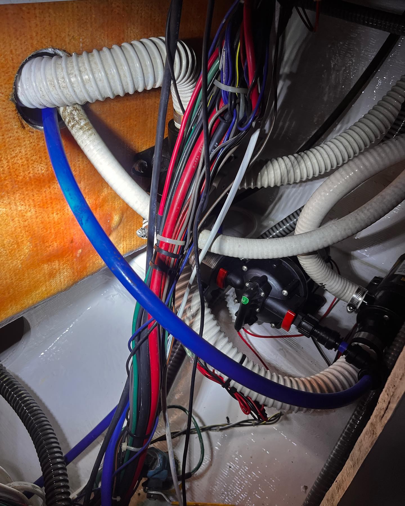
Protect your boat from harsh weather and environmental damage with our professional shrinkwrapping service, ensuring durability and preservation during off-season storage or transportation. Keep your vessel in prime condition year-round.
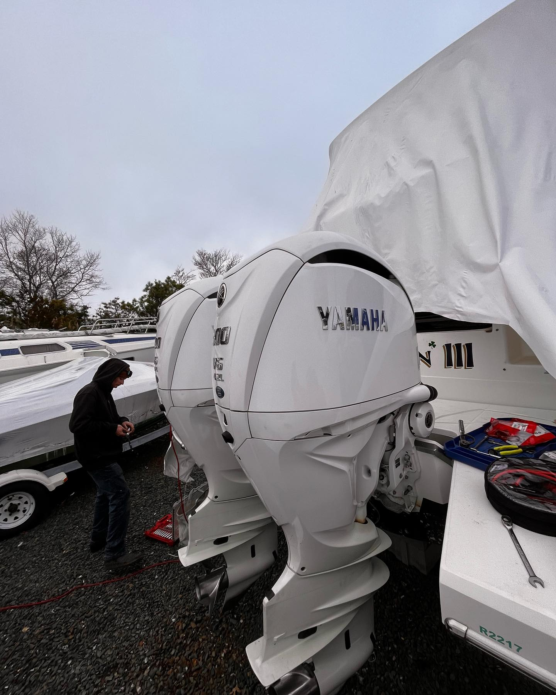
Our Restoration service revitalizes your boat to its former glory, ensuring longevity and peak performance with expert craftsmanship, high-quality materials, and personalized care for every detail of your vessel.
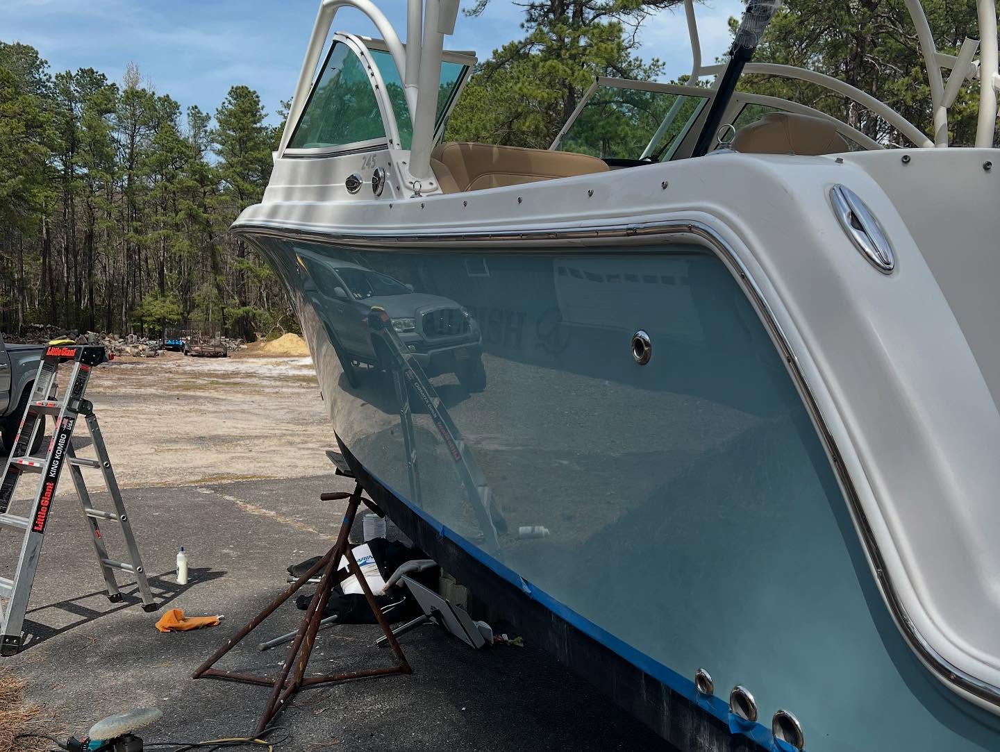
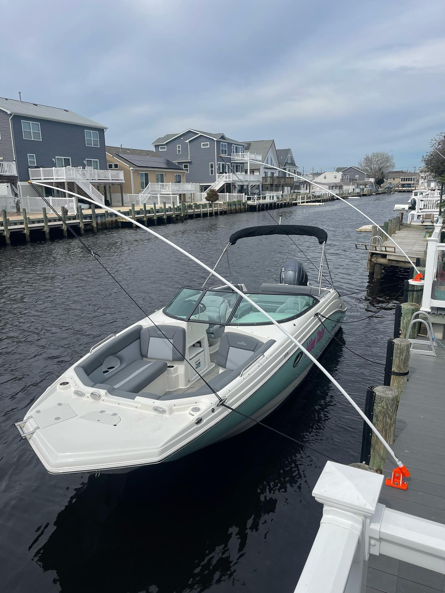
Our Best Work
From a stubborn outboard to a full repower, our customers keep coming back for one reason: the work is done right, and the price is fair. See why boaters across Ocean County trust C&T Marine.
Galleries
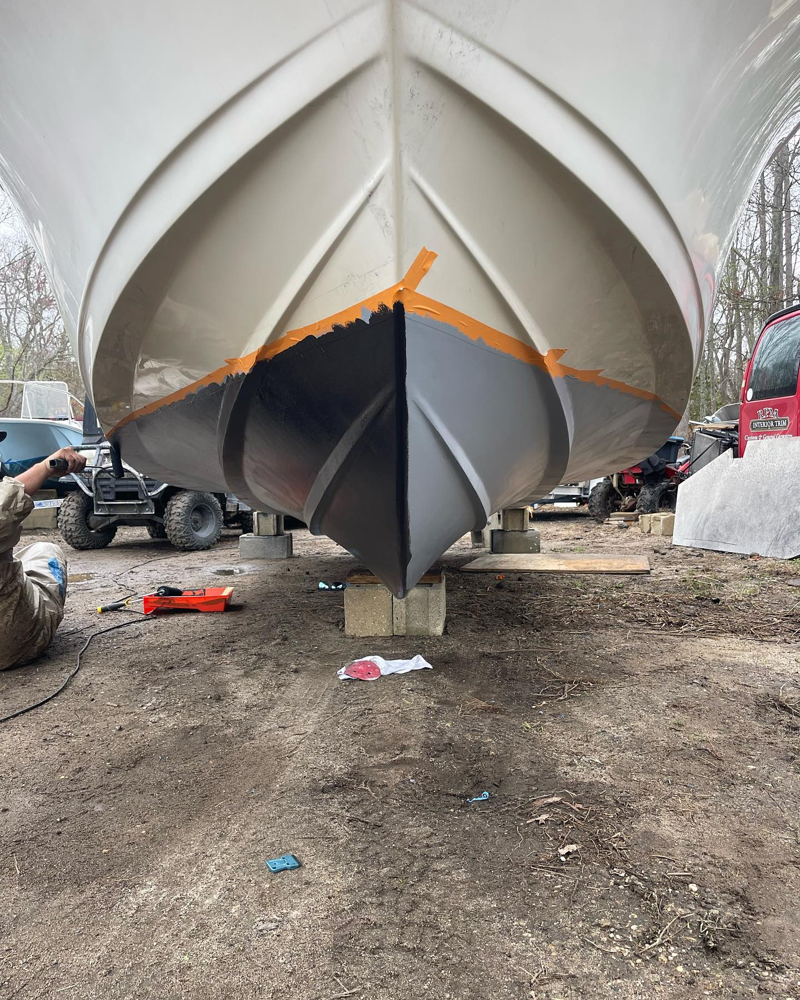
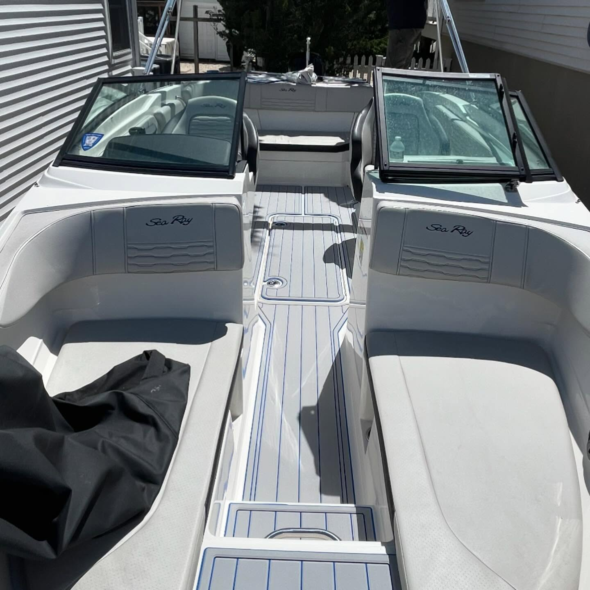
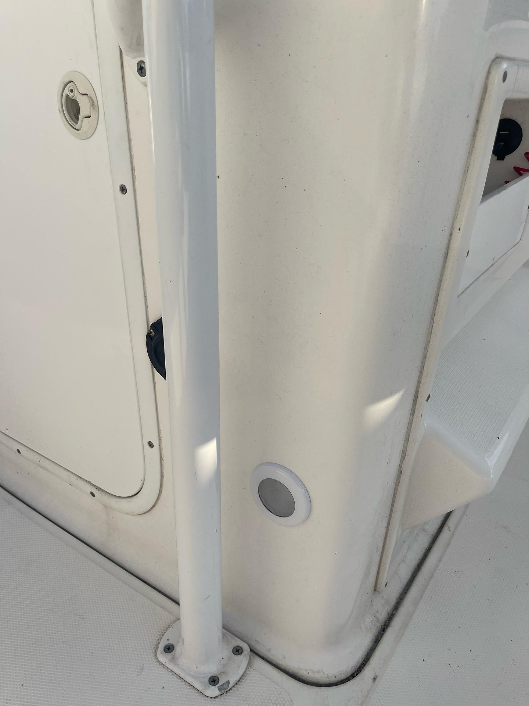
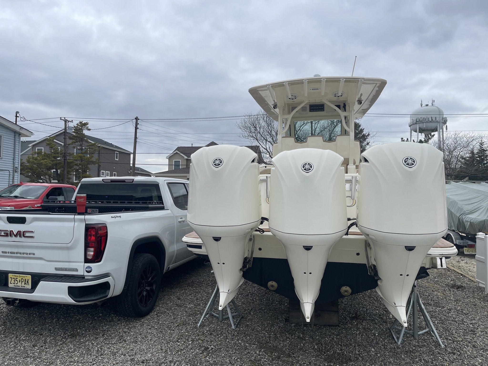
Get a Quote
Tell us about your boat and what it needs. A quick text is the fastest way to reach us.
We’ll talk through the work, answer your questions, and offer honest advice.
Get a fair, transparent quote — no runaround, no surprises on the final bill.
Reviews
Rated 5 stars by local boaters on Google & Facebook.
★★★★★Both Cullen and Teg demonstrated old school work ethic and attention to detail — something you don’t see often these days. What stood out was their transparency and communication. The final bill was on point, no surprises. Highly recommend giving C & T Marine a call.
Craig MartinoWinterization
★★★★★Had the guys at C&T install a trim tab kit and set of anodes for me. Their professionalism, quality, and fair pricing was great. They walked me through the warranty process. Great to see two young gentlemen with the drive and work ethic to go do what they love.
Robin & David FoellOutboard Service
★★★★★They completed a full 100-hour service on my Yamaha 115 and installed a new Fusion head unit with a JL Audio sound system — the setup came out absolutely perfect. Fast, honest, and reliable. No runaround, no delays. Quality work done right the first time.
Dan PiazzaOutboard Service
★★★★★C&T performed routine maintenance on my Mercury Verado 300 outboards to set me up for the season. They squeezed me in late at night after a fully booked day to accommodate a marina deadline. All work was professional and completed to the highest level.
Thomas BarnesOutboard Service
★★★★★From servicing my duck boat and 18ft Parker, these guys are great. Very professional, reliable, trustworthy, and reasonable pricing. When I called with an issue they diagnosed it and had it fixed within a day — getting me back on the water and not missing the season.
Riley CrowleyOutboard Service
★★★★★These guys are awesome! They know their stuff. Very prompt and reliable, and their charges are always fair. The afternoon I towed my used Aquasport home they met me in the driveway and got it running good in no time. I wouldn’t even think about changing!
Matt WertheimOutboard Service
Service Areas
Based in Stafford Township, we service boats and provide mobile repair throughout Ocean County and beyond.
Ready to get started?
Tell us about your boat and what it needs. We’ll get back to you with honest guidance and a fair, free quote — no obligation.